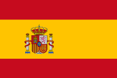
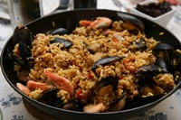

Russia

Russia is the world’s largest country. It stretches across two continents. The majority of the population lives west of the Ural Mountains, which are also the dividing line between Europe and Asia.
Russia has a long and diverse history. It developed into a monarchy led by a czar and then went through a bloody civil war with the communists. The communists prevailed and then the Soviet Union was born. After the collapse of the Soviet Union, Russia became a democracy. The Russian people are proud and strong. They have suffered a lot of hardships over the last one hundred years. They lost a whole generation of young men during the world wars and then millions more were murdered or disappeared during the reign of Stalin. Russian history, language, and culture is rich and diverse. They also have a strong literary tradition with authors like Dostoyevsky, who wrote Crime and Punishment, and Tolstoy, who wrote War and Peace.
To Learn More Follow these links:
| Russian Language | Russian Culture | Russian Fun Facts |
|---|---|---|
| Russian Language | Russian Culture | Kids Facts About Russia |
| Russian Alphabet | Russian History | 14 Facts About Russia |
| Russian Dictionary | More Russian History | 100 Interesting Facts About Russia |
| Menu | ||
|---|---|---|
| Russian | Chinese | Spanish |
|  |  |
 |  |  |